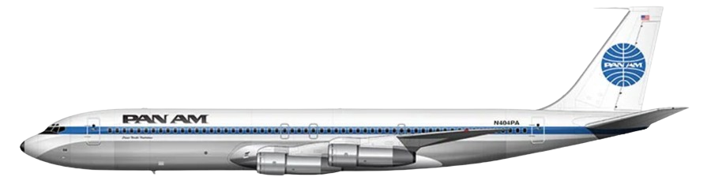
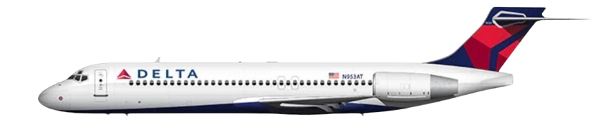
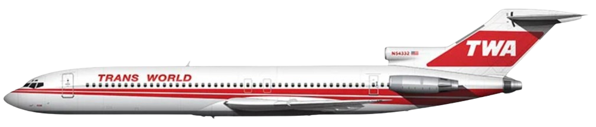
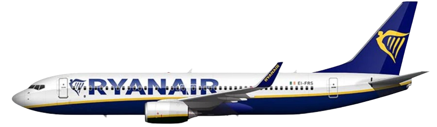
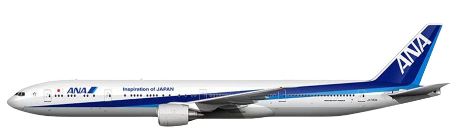
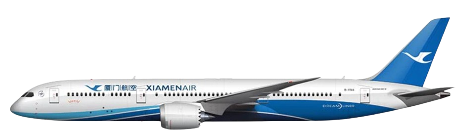
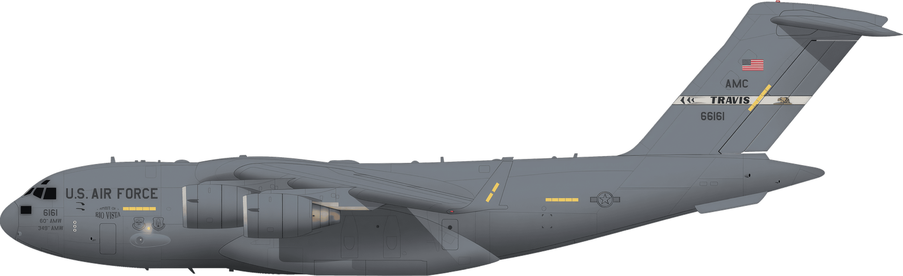
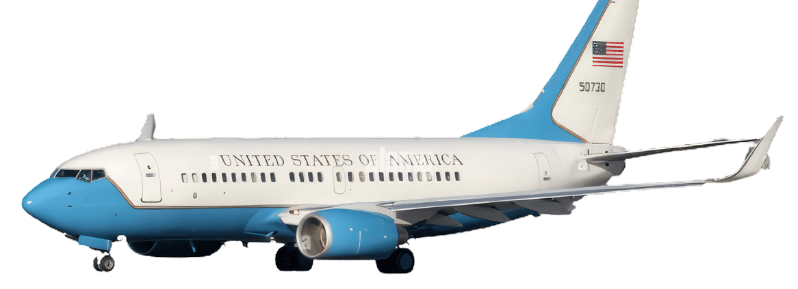
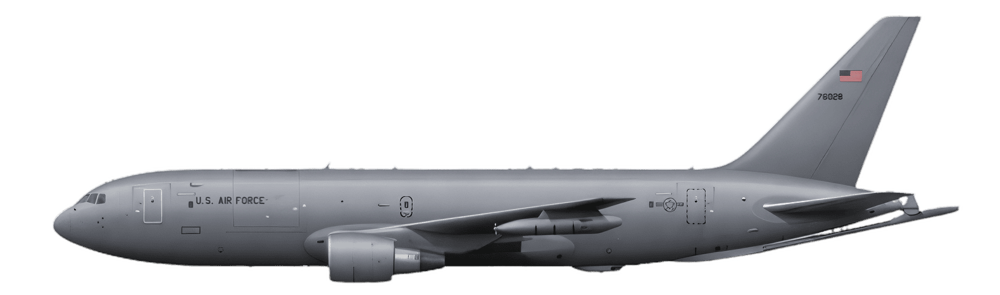

Boeing
Boeing B707
The Boeing 707, launched in 1958, is recognized as the jetliner that introduced the world to commercial jet travel.
Boeing B717
Introduced in 1999, the Boeing 717 is a highly efficient, smaller single-aisle jet, originally developed as the MD-95.
Boeing B727
The Boeing 727, a tri-jet introduced in 1963, was designed for short-haul routes and became immensely popular for its versatility.
Boeing B737
Since its debut in 1968, the Boeing 737 has become the best-selling commercial jetliner in aviation history.
Boeing B747
Known as the "Queen of the Skies," the Boeing 747, introduced in 1970, revolutionized air travel with its iconic double-decker design.
Boeing B757
The Boeing 757, launched in 1982, is known for its high performance and fuel efficiency on medium-haul routes.
Boeing B767
Introduced in 1982, the Boeing 767 is a wide-body aircraft designed for efficient mid- to long-range service.
Boeing B777
The Boeing 777, a wide-body jet introduced in 1995, is renowned for its large capacity and twin-engine efficiency.
Boeing B787
Since 2011, the Boeing 787 Dreamliner has set new standards for fuel efficiency and passenger comfort in long-haul travel.
Boeing C-17 Globemaster III
The Boeing C-17 Globemaster III, a strategic airlift military transport aircraft, has been in service since the 1990s, known for its versatile payload capabilities.
Boeing C-40
The Boeing C-40 Clipper is a military transport aircraft based on the Boeing 737, providing critical logistics and transport services.
Boeing KC-46
The Boeing KC-46 Pegasus, derived from the Boeing 767, is a multi-role tanker aircraft introduced to enhance U.S. aerial refueling capabilities.
